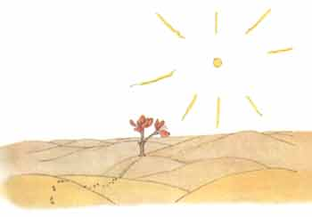

小王子目录
首页、1--3 章4--6 章
7--9 章
10-12章
13-15章
> 16-20章
21-23章
24-25章
26-27章
小王子作者
小王子解读与分析
小王子下载（PDF版）
小王子作者专题
小王子读后感集锦
《小王子》
[法] 圣埃克苏佩里
第七个行星，于是就是地球了。
地球可不是一颗普通的行星！它上面有一百一十一个国王（当然，没有漏掉 黑人国王），七千个地理学家，九十万个实业家，七百五十万个酒鬼，三亿一千 一百万个爱虚荣的人，也就是说，大约有二十亿的大人。
为了使你们对地球的大小有一个概念，我想要告诉你们：在发明电之前，在 六的大洲上，为了点路灯，需要维持一支为数四十六万二千五百一十一人的真正 大军。
从稍远的地方看过去，它给人以一种壮丽辉煌的印象。这支军队的行动就象 歌剧院的芭蕾舞动作一样，那么有条不紊。首先出现的是新西兰和澳大利亚的点 灯人。点着了灯，随后他们就去睡觉了。于是就轮到中国和西伯利亚的点灯人走 上舞台。随后，他们也藏到幕布后面去了。于是就又轮到俄罗斯和印度的点灯人 了。然后就是非洲和欧洲的。接着是南美的，再就是北美的。他们从来也不会搞 错他们上场的次序。真了不起。
北极仅有一盏路灯，南极也只有一盏；唯独北极的点灯人和他南极的同行， 过着闲逸、懒散的生活：他们每年只工作两次。
当人们想要说得俏皮些的时候，说话就可能会不大实在。在给你们讲点灯人 的时候，我就不那么忠实，很可能给不了解我们这个星球的人们造成一个错误的 概念。在地球上，人们所占的位置非常小。如果住在地球上的二十亿居民全站着， 并且象开大会一样靠得紧些，那么就可以从容地站在一个二十海里见方的广场上。 也就是说可以把整个人类集中在太平洋中一个最小的岛屿上。
当然，大人们是不会相信你们的。他们自以为要占很大地方，他们把自己看 得象猴面包树那样大得了不起。你们可以建议他们计算一下。这样会使他们很高 兴，因为他们非常喜欢数目字。可是你们无须浪费时间去做这种乏味的连篇累牍 的演算。这没有必要。你们可以完全相信我。
小王子到了地球上感到非常奇怪，他一个人也没有看到，他正担心自己跑错 了星球。这时，在沙地上有一个月光色的圆环在蠕动。

小王子毫无把握地随便说了声：“晚安。”
“晚安。”蛇说道。
“我落在什么行星上？”小王子问道。
“在地球上，在非洲。”蛇回答道。
“啊！……怎么，难道说地球上没有人吗？”
“这里是沙漠，沙漠中没有人。地球是很大的。”蛇说。
小王子坐在一块石头上，抬眼望着天空，说道：
“我捉摸这些星星闪闪发亮是否为了让每个人将来有一天都能重新找到自己 的星球。看，我那颗行星。它恰好在我们头顶上……可是，它离我们好远哟！”
“它很美。”蛇说，“你到这里来干什么呢？”
“我和一朵花闹了别扭。”小王子说。
“啊！”蛇说道。
于是他们都沉默下来。
“人在什么地方？”小王子终于又开了腔。“在沙漠上，真有点孤独……”
“到了有人的地方，也一样孤独。”蛇说。
小王子长时间地看着蛇。
“你是个奇怪的动物，细得象个手指头……。”小王子终于说道。
“但我比一个国王的手指更有威力。”蛇说道。
小王子微笑着说：
“你并不那么有威力……你连脚都没有……你甚至都不能旅行……”
“我可以把你带到很远的地方去，比一只船能去的地方还要远。”蛇说道。
蛇就盘结在小王子的脚腕子上，象一只金镯子。
“被我碰触的人，我就把他送回老家去。”蛇还说，“可是你是纯洁的，而 且是从另一个星球上来的……”
小王子什么也没有回答。
“在这个花岗石的地球上，你这么弱小，我很可怜你。如果你非常怀念你的 星球，那时我可以帮助你。我可以……”
“啊！我很明白你的意思。”小王子说，“但是你为什么说话总是象让人猜 谜语似的？”
“这些谜语我都能解开的。”蛇说。
于是他们又都沉默起来。
小王子穿过沙漠。他只见过一朵花，一个有着三枚花瓣的花朵，一朵很不起 眼的小花……

“你好。”小王子说。
“你好。”花说。
“人在什么地方？”小王子有礼貌地问道。
有一天，花曾看见一支骆驼商队走过：
“人吗？我想大约有六七个人，几年前，我瞅见过他们。可是，从来不知道 到什么地方去找他们。风吹着他们到处跑。他们没有根，这对他们来说是很不方 便的。”
“再见了。”小王子说。
“再见。”花说。
小王子爬上一座高山。过去他所见过的山就是那三座只有他膝盖那么高的火 山，并且他把那座熄灭了的火山就当作凳子。小王子自言自语地说道：“从这么 高的山上，我一眼可以看到整个星球，以及所有的人。”可是，他所看到的只是 一些非常锋利的悬崖峭壁。
“你好。”小王子试探地问道。
“你好……你好……你好……”回音在回答道。
“你们是什么人？”小王子问。
“你们是什么人……你们是什么人……你们是什么人……”回音又回答道。
“请你们做我的朋友吧，我很孤独。”他说。
“我很孤独……我很孤独……我很孤独……”回音又回答着。
小王子想道：“这颗行星真奇怪！它上面全是干巴巴的，而且又尖利又咸涩， 人们一点想象力都没有。他们只是重复别人对他们说的话……在我的家乡，我有一 朵花。她总是自己先说话……”
在沙漠、岩石、雪地上行走了很长的时间以后，小王子终于发现了一条大路。 所有的大路都是通往人住的地方的。
“你们好。”小王子说。
这是一个玫瑰盛开的花园。
“你好。”玫瑰花说道。
小王子瞅着这些花，它们全都和他的那朵花一样。
“你们是什么花？”小王子惊奇地问。
“我们是玫瑰花。”花儿们说道。
“啊！”小王子说……。
他感到自己非常不幸。他的那朵花曾对他说她是整个宇宙中独一无二的一种 花。可是，仅在这一座花园里就有五千朵完全一样的这种花朵！
小王子自言自语地说：“如果她看到这些，她是一定会很恼火……她会咳嗽得 更厉害，并且为避免让人耻笑，她会佯装死去。那么，我还得装着去护理她，因 为如果不这样的话，她为了使我难堪，她可能会真的死去……”
接着他又说道：“我还以为我有一朵独一无二的花呢，我有的仅是一朵普通 的花。这朵花，再加上三座只有我膝盖那么高的火山，而且其中一座还可能是永 远熄灭了的，这一切不会使我成为一个了不起的王子……”于是，他躺在草丛中哭 泣起来。
1-3章4-6章7-9章10-12章13-15章16-20章21-23章24-25章26-27章